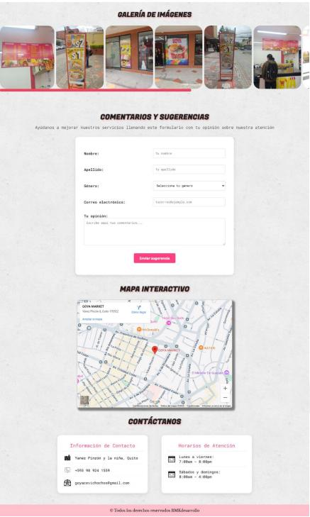
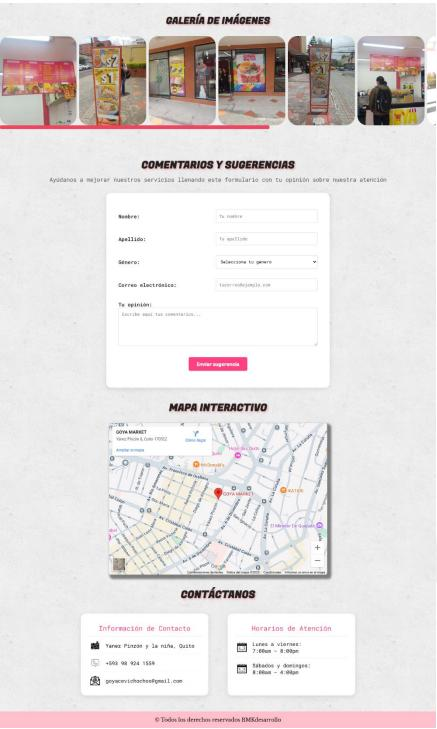

Desarrollo de una muñequera inteligente vinculada a una aplicación móvil web, diseñada no solo para monitorear el pulso cardíaco del usuario, sino también para detectar anomalías en tiempo real. Cuando el brazalete identifica un ritmo cardíaco irregular o peligroso, envía una notificación inmediata a través de la aplicación, alertando al usuario o al cuidador. Pero esto no es todo. Este dispositivo ha sido concebidoespecialmente para brindarapoyo a pacientes en situación de vulnerabilidad o con enfermedades terminales, tales como personas de la tercera edad, pacientes con antecedentes de derrames cerebrales, parálisis parcial o total, entre otros. Desarrollo de una muñequera inteligente vinculada a una aplicación móvil web, diseñada no solo para monitorear el pulso cardíaco del usuario, sino también para detectar anomalías en tiempo real. Cuando el brazalete identifica un ritmo cardíaco irregular o peligroso, envía una notificación inmediata a través de la aplicación, alertando al usuario o al cuidador.

Desarrollar una página web informativa para el negocio Goya Cevichochos con el propósito de difundir información sobre sus productos, historia, servicios y ubicación, presentando el contenido de manera clara, atractiva y accesible para los usuarios, utilizando para ello los lenguajes HTML, CSS y JavaScript en el entorno de desarrollo Visual Studio Code y XAMPP.
 
